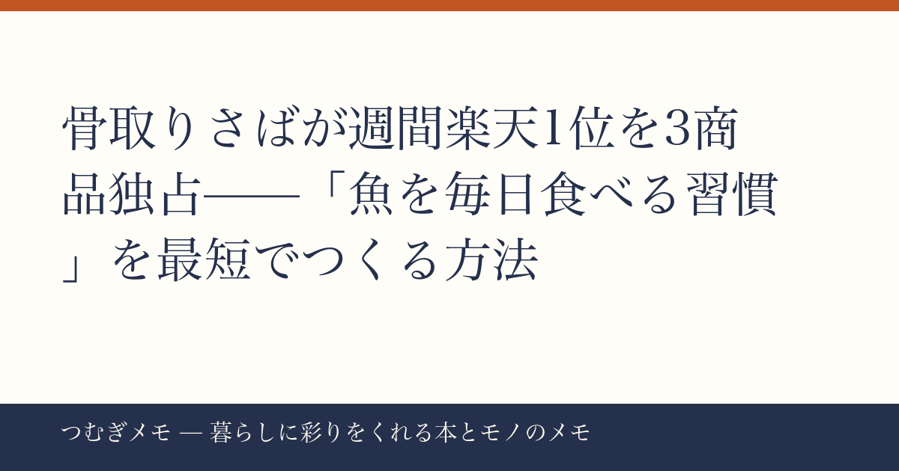

こんにちは、つむぎです。今週のランキングを眺めていたら、ある"潮流"があまりにくっきり見えたので、迷わず1本丸ごとそれに使うことにしました。
この記事でわかること: 楽天週間ランキングで骨取り鯖・鮭が複数同時ランクインした理由と、「魚を毎日食べる習慣」を無理なく定着させるための具体的な3ステップ。
今週の要点
- 骨取りさば・銀さけ関連商品が楽天ランキングに今週だけで4商品同時ランクイン
- 「骨を取る手間」という最後の壁をなくしたことが、魚の日常食化を加速させている
- 冷凍ストックとルーティン化の組み合わせが、食生活を変えるいちばん小さな入口になる
---
今週の楽天ランキングで目を引いたのが、骨取り魚の集中ぶりだった。1位に2kg9,980円→4,990円の骨取りさば（レビュー36,993件・★4.78）、8位に骨取りサバ切身1kg（レビュー19,156件・★4.51）、10位に有塩の骨取りさば（レビュー16,720件・★4.77）、さらに2位には骨取り銀さけ（レビュー1,288件・★4.82）と、骨取り冷凍魚が4商品同時にトップ10を占拠している。これは単なるセール効果だけでは説明がつかない。
なぜなら、レビュー件数がそれぞれ1万件超・3万件超という積み上がりは、一過性の話題商品では生まれない数字だからだ。繰り返し買われ、繰り返し「よかった」と投稿され続けた商品だけが持つ重さがある。
分析してみると、背景には「魚を食べたいが、調理のハードルが高い」という長年の矛盾がある。健康や食事の質への関心は確実に高まっているのに、平日の夜に魚をさばいて骨を取って——という工程は現実的ではない。骨取り冷凍魚はその矛盾を正面から解消する商品だ。凍ったまま袋から出して焼けば完成する。洗い物も最小限。「魚を食べる決意」ではなく、「魚を食べない理由をなくす」というアプローチが今の時代にはまっている。
今日できる行動: まず試すなら1kgの小容量タイプから。冷凍庫の一段をまるごと魚ゾーンと決めてしまうと、買い足しのリズムが自然とできる。
---
冷凍の骨取り魚が支持される理由は、単なる便利さではなく「ストック前提の設計」にある点が大きい。今週1位商品のタイトルには「業務用 食品 ストック」という言葉が並んでいる。これはもはや「たまに使う食材」ではなく、「常備して当たり前のもの」として売られているということだ。
食習慣の研究では、「意志力に頼らず環境を変える」ことが行動変容の鍵だと繰り返し指摘されている。骨取り冷凍魚を冷凍庫に常備することは、まさにその「環境を変える」行為に当たる。「魚を食べようかな」と考えて行動するのではなく、「冷凍庫にあるから今夜は魚にする」という流れが生まれる。決断コストがゼロになるとき、人ははじめて習慣を変えられる。
鯖は特に汎用性が高い。塩焼きにしても、ほぐしてご飯に混ぜても、トマト缶と煮ても成立する。今週2位の骨取り銀さけ（★4.82）と組み合わせてローテーションを組めば、魚メニューに飽きにくくなる。
食と習慣づくりについて体系的に考えたい人には、習慣形成の仕組みを丁寧に解説した本として
楽天で『習慣の力 チャールズ・デュヒッグ』を見る / Amazonで『習慣の力 チャールズ・デュヒッグ』を見る を手元に置いておくのをおすすめしたい。「なぜ環境を変えると行動が変わるのか」の理屈を理解すると、食習慣だけでなく暮らし全体のデザインに応用できる。
今日できる行動: 今夜の献立を決める前に冷凍庫を確認する。魚のスペースがゼロなら、今週中に1袋だけ買って入れてみる。それだけでいい。
---
買っても続かない、が食習慣の最大の落とし穴だ。ここでは実際に機能する仕掛けを3つ整理する。
① 週2回をベースラインにする
毎日ではなく週2回を目標にすると、失敗してもリカバリーが効く。月曜と木曜を「魚の日」と決めて、その日だけ冷凍庫から出す習慣にすると定着しやすい。
② 調理法を固定する
最初は「鯖は塩焼き一択」でいい。レパートリーを広げるのは3ヶ月後でいい。選択の余地をなくすことで、意志力を使わずに動ける。魚焼きグリルがない場合は、フライパンにクッキングシートを敷いて焼くだけで十分だ。
③ 記録より感覚を大事にする
食事記録アプリに毎食入力するのは長続きしない人が多い。代わりに「今週は何回魚を食べたか」を週末に5秒だけ振り返る程度で十分。完璧主義が続かない原因になりやすい。
食と暮らしのデザインについてもっと深く読みたいなら 
楽天で『「空腹」こそ最強のクスリ 青木厚』を見る / Amazonで『「空腹」こそ最強のクスリ 青木厚』を見る も参考になる。食事のタイミングや内容より「食べない時間」に着目した切り口で、魚を食べる習慣と組み合わせると効果的な食生活の枠組みが見えてくる。
(PR) 食と健康に関する特集が組まれている雑誌を定期的に読みたいなら、Fujisan.co.jp 雑誌のオンライン書店を見るでは栄養・暮らし系の雑誌を最大70%割引で定期購読できる。気になる雑誌を1冊試してみるのもいい入口になる。
今日できる行動: 来週の「魚の日」を2日だけカレンダーに入れる。予定を入れると、その日の夕方に自動的に冷凍庫を開くようになる。
---
Q. 骨取り魚は普通の魚より栄養が落ちますか?
A. 骨取りの加工工程自体が栄養素を大きく損なうわけではない。鯖や鮭が持つEPAやDHAなどの脂質は身の部分に含まれるため、骨を取っても基本的な栄養価は維持される。冷凍保存についても、適切に凍らせた魚は鮮度の面でむしろ有利な場合もあるとされている。
Q. 1kgと2kgどちらを買うべきですか?
A. 魚を冷凍で常備するのがはじめてなら、まず1kgのお試しタイプで自分のペースを確認するのをすすめる。週2回食べるなら2人家族で1kgが約2〜3週間分の目安になる。消費ペースがつかめたら2kgにステップアップすると、コスパと使い切りのバランスが取りやすくなる。
Q. 飽きずに食べ続けるコツはありますか?
A. 鯖と鮭を交互にローテーションするだけでかなり違う。さらに「塩焼き週」「煮魚週」のように月単位で調理法を切り替えると、同じ食材でも新鮮に感じやすい。缶詰レシピ本を参考に、ほぐして使う料理を1品覚えておくと応用範囲が一気に広がる。 Amazonで『サバ缶レシピ決定版 川上文代』を見る
---
今週は「骨取り冷凍魚」という一点突破でまとめた。楽天のランキングを眺めていると、単なるセール品の動きではなく、「魚を日常にしたい人たちの課題感」が可視化されている瞬間に出会うことがある。そういう潮流を丁寧に拾って、「で、実際どうすればいいの?」まで届ける記事を心がけている。
このブログは、AIと一緒に運用している実験的なメディアでもある。毎週のランキングやトレンドの読み解きにAIの分析を取り入れながら、最終的な文章と判断は僕・つむぎが行っている。透明性を大事にしたいので、軽く触れておく。
また来週、有益な話をお届けします。X（@tsumugi_memo15）でも気軽に話しかけてください。
📚 目次へ